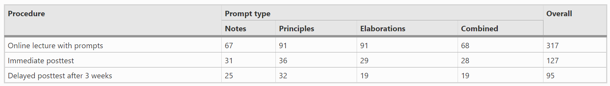
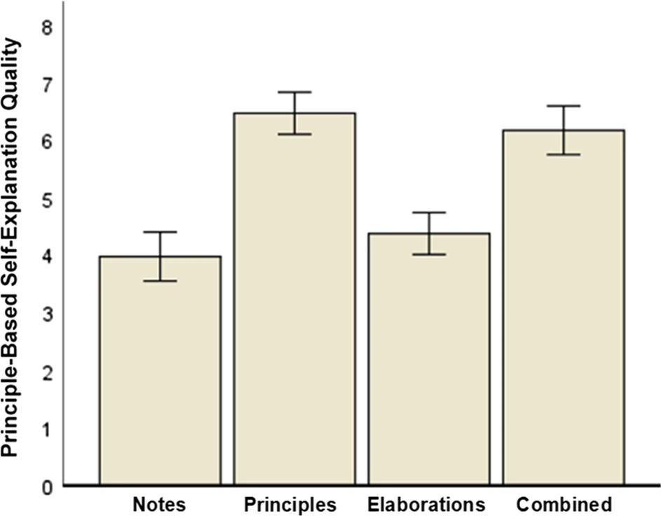

Red: author of the research
Bold: important authors
Blue and white: external links
Black dotted: abbreviation
Method
by Markus H. Hefter et al · March 10, 2023
In recent years, COVID-19 policy measures massively affected university teaching.
Seeking an effective and viable way to transform their lecture material into asynchronous online settings, many lecturers relied on prerecorded video lectures.
Sample and design
Three-hundred and seventeen teacher students at a German university participated in the online lecture. Hence, we have learning process data on N=317. Out of these
317 participants, 124 agreed to take part in the posttest immediately after the lecture. Therefore, our main sample that included data on learning outcomes comprised
N=124 (73 females, 49 males). Random assignments to the experimental conditions were:
both principle and elaboration-based prompts (combined condition, n=28).
Out of our main sample of 124 participants, 95 took part in the delayed posttest. These dropouts resulted in varying degrees of freedom (df) in the respective
statistical analyses. Please see Table 1 for an overview on the conditions and number of participants.

Table 1: overview on the conditions and number of participants. Click to enlarge
Procedure and materials
This study took place completely online during the summer and winter semesters of 2021/2022. The video lecture took place in the 9th week of the semester,
and participants had 3 weeks to access the online lecture on our online platform via their own device' web browser. After receiving the data protection information and
providing informed consent, participants took the pretest on declarative knowledge and watched the lectures' video clips.
This lecture was identical for all our four experimental conditions and featured the topic Cognitive Apprenticeship (Collins et al). It was video-based and lasted
roughly 40 min in total, showing the last author lecturing and presenting slides. We cut the lecture into six video clips. The first clip was an introduction of about 25
min. Then came four shorter clips lasting about 2 min each that focused on the four main lecture principles. These principles were the components of the Cognitive
Apprenticeship the students should learn, namely
Modelling
Scaffolding and Fading
Articulation and Reflection
Exploration
The lecture ended with a short outro clip of about 5 min. After each of the four clips about the main principles, a prompt according to the experimental condition was
shown.
Measures
Learning time
The online platform we used for the video lecture logged the time that participants spent viewing the four video clips and answering the prompts.
The participants could take as much time as they wanted to answer the prompts.
The time the participants spent watching the video clips was fixed, though, and the prompts only ever showed up, once the video had finished.
Hence, learning time can actually be considered as the sole “prompt-answering” time.
Declarative knowledge
To assess learning outcomes, we focused on declarative and conceptual knowledge.
More specifically, declarative knowledge related to a short test comprising eight closed true-or-false items about the lecture's main principles.
Students could answer them with "true", "false", or "do not know." Scoring for each item was one point for a right answer, minus one point for a wrong answer, and zero points for "do not know."
We summed up the score for all eight items to arrive at a total score on declarative knowledge. We carried out this test three times:
right before the lecture (pretest)
right after the lecture (immediate posttest)
3 weeks later (delayed posttest)
Conceptual knowledge
To assess deeper conceptual knowledge about the lecture's main principles, we posed an open question: Please describe the main principles of the Cognitive Apprenticeship components.
We rated participants' answers on a scale from 0 (minimum) to 8 (maximum), giving up to two points for describing the principles of each the four components.
Hence, to receive the maximum rating of eight all four components needed to be correctly described.
We assessed conceptual knowledge right after the lecture (immediate posttest) and 3 weeks later (delayed posttest).
The first author and a student research assistant were blind to the conditions and rated the data from 25 randomly selected participants.
Learning processes
First, an ANOVA revealed a large effect of prompt type on principle-based self-explanation quality. Figure 1 displays the results. To test our specific hypotheses that
both principle-based and combined self-explanation prompts foster principle-based self-explanations, we used the following contrast weights assigned to the prompt
types: notes:- ; principles: 1; elaborations: - ; combined: 1.

Table 1: overviewon the conditions and number of participants
References
Benson, R. (1988). Helping pupils overcome homework distractions. The Clearing House: A Journal of Educational Strategies, published in Issues and Ideas.Helping Pupils Overcome Homework Distractions